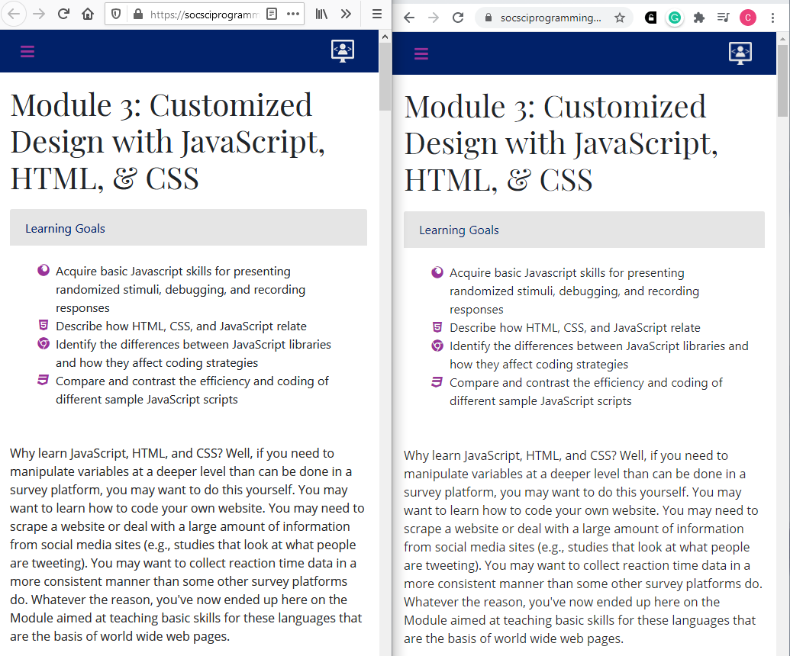
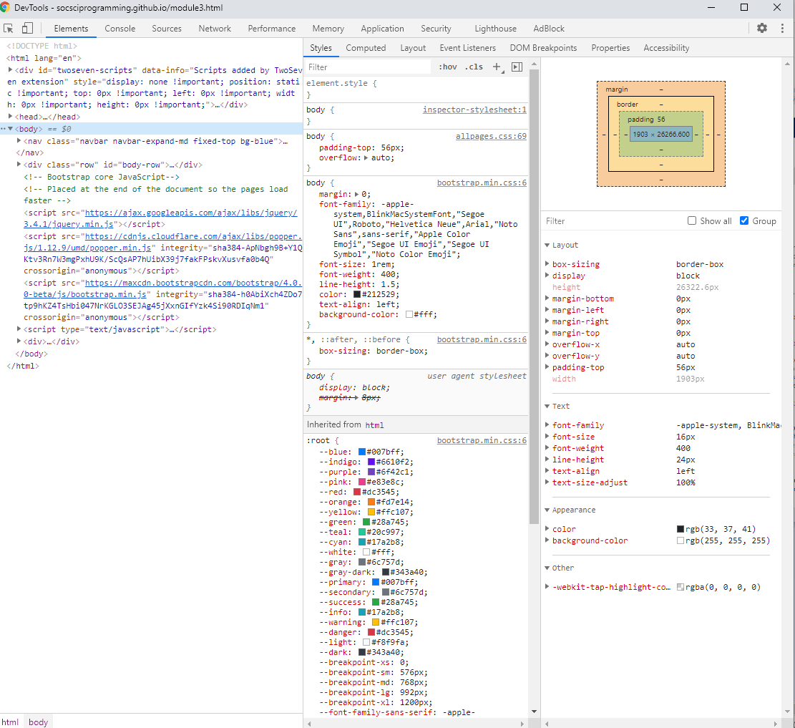
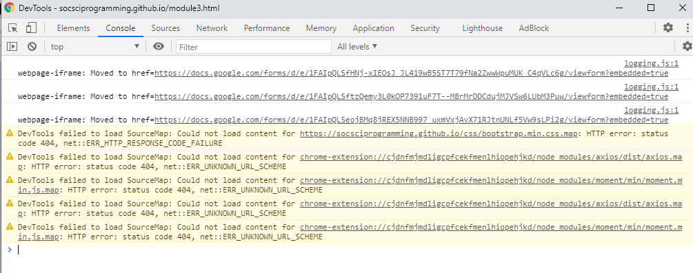
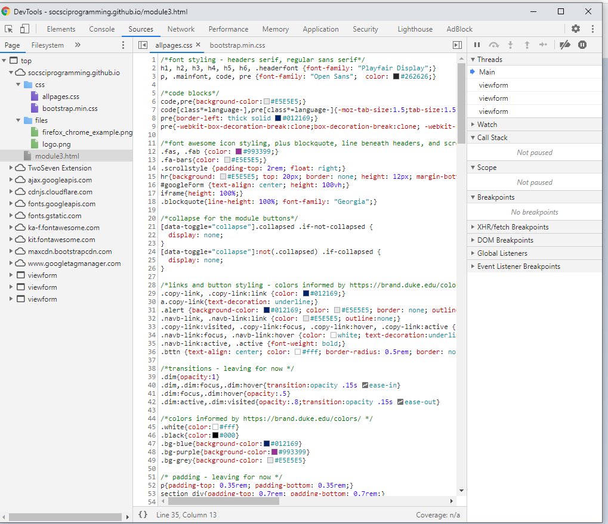
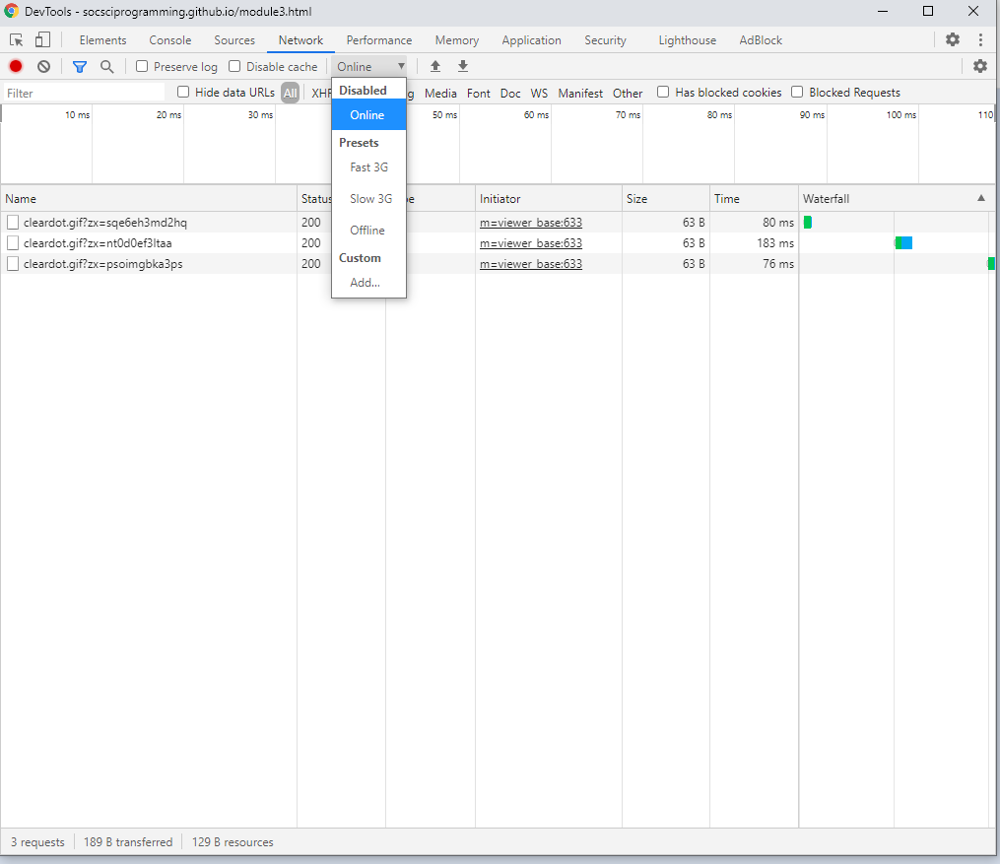
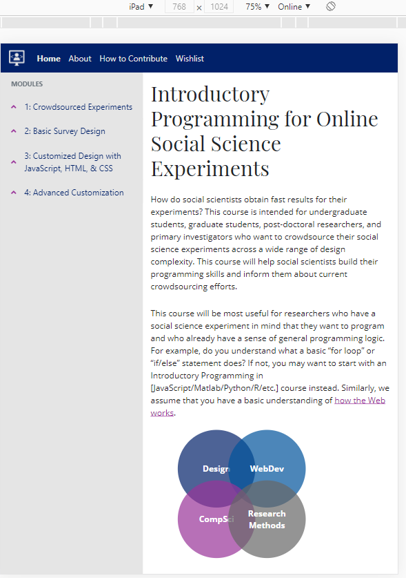
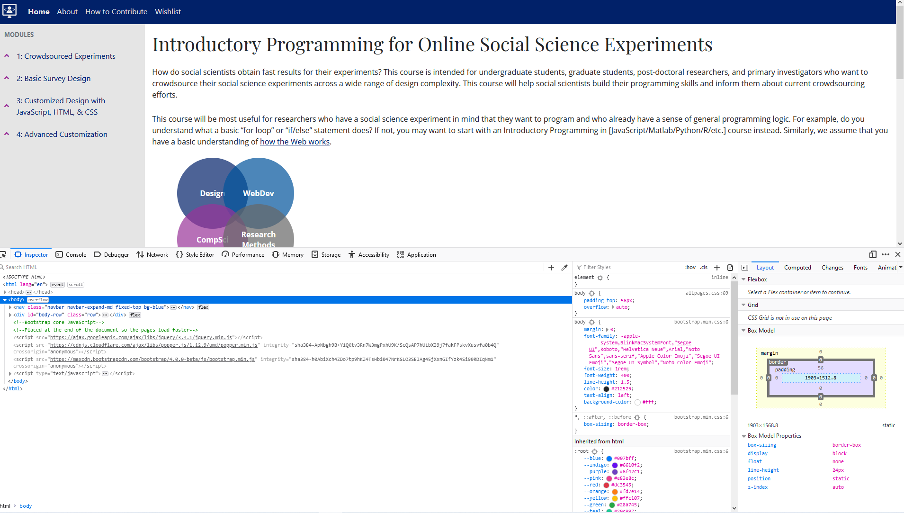

Module 3: Customized Design with JavaScript, HTML, & CSS
- Acquire basic Javascript skills for presenting randomized stimuli, debugging, and recording responses
- Describe how HTML, CSS, and JavaScript relate
- Identify the differences between JavaScript libraries and how they affect coding strategies
- Compare and contrast the efficiency and coding of different sample JavaScript scripts
Why learn JavaScript, HTML, and CSS? Well, if you need to manipulate variables at a deeper level than can be done in a survey platform, you may want to do this yourself. You may want to learn how to code your own website. You may need to scrape a website or deal with a large amount of information from social media sites (e.g., studies that look at what people are tweeting). You may want to collect reaction time data in a more consistent manner than some other survey platforms do. Whatever the reason, you've now ended up here on the Module aimed at teaching basic skills for these languages that are the basis of world wide web pages.
Of note, there are a LOT of additional resources for HTML, CSS, and JavaScript. Every time I look at Google on my phone, it knows that I've been writing about JavaScript, HTML, and CSS and suggests some article to that effect - there are entire communities that focus on creating packages and functionality within these languages. Here are some resources for you to peruse:
- Chapter 9 of Matthew Crump's "Programming for Psychologists" goes over programming for Web Experiments and Chapter 8 goes over another site that helps generate source code for you to run online experiments.
- Code Academy has an Introduction to JavaScript.
- May I recommend yet another JavaScript tutorial and set of videos oriented to giving you a project using JavasScript? Similarly, there is an entire set of video tutorials for beginners on CSS, and an intro to HTML and CSS video for beginners in thinking about websites generally.
- W3Schools is your friend. Every time I forget a particular element for code, I search on Google for what I need, and the most frequent site that pops up with the answer is undoubtedly W3Schools. They have a tutorial on HTML, CSS, and JavaScript. The MDN Web Docs are also your friend: Mozilla has open-source resources on these languages for web developers at all stages of expertise. Similarly, StackOverflow and StackExchange are your friends when you're coding. Someone else has likely had the same issue you've had and posted their error to StackOverflow, where other kind folks will respond with crowdsourced solutions. Make sure to be specific in your Google Search for what you're looking for, and then you'll likely find a solution (unless you're doing something highly, highly specialized, like creating your own package or library).
- Raphael Geddert in the Egner Lab also compiled a list of resources on JavaScript, HTML, and CSS; some are already listed here.
- If you're a Duke student, you can also access the "Programming Foundations with JavaScript, HTML, and CSS" coursera and the co-lab roots courses on the Web Development track, which include courses on HTML and CSS, with an aim towards creating your own website.
This course differs from those resources in that we're taking an applied perspective. If you want to know the fundamentals from a computer science perspective, you may be better off looking through the coursera or going through the other tutorials that have a more of a strict programming lens. My perspective is that of an applied scientist: I understand what is going on with the code, and I am teaching you the basics and how people use the basics to create experiments. I will not comment on whether certain scripts have the "right" structure or formatting. In other words, I don't care if you get the right answer within 100 lines of code or 10: I care that you know what your code is doing and have checked and tested the code properly, but anything else will be beyond the scope of this course. Using 100 lines of code will of course take longer to load than 10, but with the tools you'll learn in bugging and testing, you can see whether your code formatting will pose an issue for the User Experience.
Of course, one other question that you might have is whether you even need to code your experiment in JavaScript, HTML, and CSS. For example, if you have already coded your experiment in PsychoPy (a Python-based framework), you should check out Pavlovia, a tool to help convert your already existing code. Similarly, you may find that some of the experiments (within psychology) that you're looking for are already coded, via the Expfactory Github. But, if you're not among that group...
For the purpose of this module and writing code using JavaScript, HTML, and CSS, you will need a good text editor. Some options include: Notepad++, Atom, Brackets, and Textwrangler. (Undoubtedly, there are more, like Sublime, but here is a small selection). I personally use Notepad++ because it has a very simple interface, and I like that when I'm coding. Atom has additional packages that can color each language (show when you're using HTML vs. JavaScript vs. CSS), auto-indent and oraganize your code, and link directly to Github, and to my knowledge, Textwrangler also does this. Brackets has that functionality, but also employs the ability to live test your HTML out, because it creates a local copy that can get published for a 'preview.' Moreover, Brackets employs a JavaScript library (that we'll go over in Module 4) that checks your code for what it thinks are errors. Outside of Brackets, you can also preview what your code looks like using places like JSFiddle, Glitch, JSBin, and CodePen. So, the simplest option is Notepad++, then Atom or Textwrangler, and then Brackets. (If you really want the local testing of Bracekts but to use another text editor, you can set up your own local testing server). Once you've gotten your text editor program downloaded, and presuming you've already got version control in place after Module 2, then join me on the journey to get into the basics of these languages!
Basics of HTML, CSS, and JavaScript
When you load a webpage, your browser looks at the code and renders web content according to its internal guidelines. If you want to see what I mean by the latter, you can load this exact webpage in both Chrome and Firefox. It looks a little different, right? It's the same code, but the way each browser interacts with the code differs.
In the example above, Firefox is on the left and Chrome is on the right, loading the initial view of this webpage on the same exact screen at the same browser size, and yet you can notice a slight difference between the two. But isn't that also the genius of the code? No matter what browser this code is read on, it looks almost exactly the same. So, let's define what HTML, CSS, and JavaScript even are.
{kind=link}
HTML stands for Hyper Text Markup Language. As a Markup language, HTML will process certain "tags" (elements) that will communicate with the browser. All browsers can recognize HTML and have been designed to do so: HTML is the foundation and structure of the content that you will see on websites. As the Mozilla Developer Guide says, HTML can "give [pieces of text] different meaning in a document (Is it a paragraph? Is it a bulleted list? Is it part of a table?), structure a document into logical sections (Does it have a header? Three columns of content? A navigation menu?), and embed content such as images and videos into a page." If you were to look at the code for Module 3 - which we will do in more detail below - you would see a whole lot of HTML with our website content and a standard structure. HTML files naturally have the extension ".html".
CSS stands for Cascading Style Sheet. It is a styling language, used primarily to impose display rules and properties on the HTML content of websites, changing their layout and look (e.g., font, color and size of any element, spacing, animations, columns for content, etc.). In the sections below, we will also look at the custom CSS sheet used for this module. CSS files naturally have the extension ".css". While learning HTML and CSS, people will often move back and forth between the two languages because they work well together, and you can get by on a webpage without using JavaScript, but typically use HTML and CSS together for any webpage.
Finally, JavaScript is a programming language that is primarily used to interact with the HTML (and CSS) - it runs on its own (in response to events on the page), runs computations (e.g., operations on text), controls the behavior of the website, etc. At the bottom of this tutorial site, there is an up arrow colored in purple. When you click the up arrow, it will scroll you all the way back to the top of the site via JavaScript. It also uses an interactive element called a "tooltip" that will appear when you hover on the arrow, the hover being a "trigger event" that is dictated by JavaScript. JavaScript helps a webpage do more than display static information. JavaScript files have the extension ".js".
So, now let's more fully explore how HTML provides the structure and content that is styled by CSS and that interacts with JavaScript.
Providing structure and content with HTML
As a markup language, HTML is made of elements that are composed of opening and closing tags marked by these carrot keypresses: < and >. In both the opening and closing tag, you'll wrap the name of the element (p for paragraph text, b for bold text, etc.) in these opening and closing carrot keypresses (or angle brackets), marking both where the element starts and ends. In short, an HTML element is the opening tag (<p>) + content (paragraph (p) text here!) + closing tag (</p>). Note that the closing tag is almost exactly like the opening tag, but includes a forward slash to indicte the end of the tag (and element).
If you only have an opening tag or only have a closing tag, your stuff may go haywire. For example, I sometimes forget to include a closing tag when I'm linking off site, and because of the styling rules on this site, all the text then turns purple or blue to indicate a link. That is, I broke the syntax of HTML by not including a closing tag, and the HTML tag will assume that the rest of the content is a part of the element until it reaches the next closing tag. Here's what this paragraph looks like in the code!
<p> If you only have an opening tag or only have a closing tag, your stuff may go haywire. For example, I sometimes forget to include a closing tag when I'm linking off site, and because of the styling rules on this site, all the text then turns purple or blue to indicate a link. That is, I broke the syntax of HTML by not including a closing tag, and the HTML tag will assume that the rest of the content is a part of the element until it reaches the next closing tag. Here's what this paragraph looks like in the code! </p>
Despite what I said about breaking HTML syntax, note that tags are case-insensitive, meaning that you can spell a tag like <span> or <SPAN> or <Span> or <SpAn>, etc. However, most folks use all lower-case for tags: this is what's consistent in other code and it's just more readable - all caps looks like you're shouting, and a mix of upper and lower case is confusing.
You can place elements within other elements, otherwise known as nesting. I can create a hyperlink to another site with an "a" tag within a paragraph text element. You're probably most familiar with nested elements with respect to bolding, strongly emphasizing the importance of something, italicizing, emphasizing, underlining, or striking through text.
<p> You can place elements within other elements, otherwise known as nesting. I can <a href="https://developer.mozilla.org/en-US/docs/Learn/HTML/Introduction_to_HTML/Creating_hyperlinks" class="copy-link"> create a hyperlink</a> to another site with an "a" tag within a paragraph text element. You're probably most familiar with nested elements with respect to <b>bolding</b>, <strong>strongly emphasizing the importance of something</strong>, <i>italicizing</i>, <em>emphasizing</em>, <u>underlining</u>, or <s>striking through</s> text. </p>
You may also wonder what's the difference between the <b> and <strong> tags, or <i> and <em> tags, if they essentially do the same thing? Well the <i> tag is meant to be used for traditional italicized things, like an academic journal you're citing, whereas <em> is meant for a kind of semantic emphasis. The same goes for <b> and <strong>: use <b> for traditionally bolded things, like keywords or lead sentences, and use <strong> for semantically stressing the importance of something.
It'd be impractical to go over all the HTML elements. To this day, I sometimes will still look up details of an HTML tag because it's hard keeping track of all the different details of each programming language you learn. Don't feel bad about Googling.
OK, so now you know the basic syntax of HTML and some HTML text fundamentals. What is each element like?
Each HTML element is contained within a box. We already talked about nesting elements - this nesting can actually create what's known as a parent-child relationship. For example, the bold, italics, etc. tags are children of the (parent) paragraph tag in the previous code block, and you can extrapolate that relationship to most of the structure provided by HTML. Within the boxes for each HTML element, you can create space within the box (padding, border) or outside the box (margin). See the following model - the code for which I took from W3 schools.
Margin, border, and padding can be modified on all axes - left, right, top, and bottom. One example of this very box model concept is demonstrated in these code blocks. Which do you think was modified to get the background to be fully grey, and which do you think was modified for the left aligned blue line? Can you see how these will be useful for you when coding an experiment? Of note, previously I mentioned that while designing this site, I recognized I had put a lot of text on one page, so I tried to compensate by... increasing the top and bottom padding for the paragraph (p) elements!
One other distinction that can be made about HTML elements refers to their default display. Are they considered block-level or inline elements? A typical inline element is contained within a block-level element, being a part of a line rather than causing a new line to appear (e.g., bolding text, creating hyperlinks). A block-level element is one that can create a new line and is often a structural element, like the paragraph text (p) element, headers, etc. You can still nest block-level elements, but they'd only be nested within more block-level elements (like all the p tags that are all nested here within the main text of this webpage!). Notably, recent updates to HTML suggest this kind of distinction may not survive future iterations/edits, but it's useful for now.
Remember how we established the basic syntax of HTML as opening tag + content + closing tag? Well, some HTML tags don't need a closing tag. These are special cases, called Empty/Void Elements. They often involve defining certain information associated with the webpage or embedding information. For example, here are some (but not all of the possible) Empty Elements...
<meta>, <img>, <link>, <hr>, <br>, <col>, <base>
Some of these you've actually already seen used here, like the hr (Horizontal Rule) element, which forms the thick grey line that I use to separate between Module sections. Images? You've already seen a number of images loaded on this site - and get this, HTML is so flexible that you can still include a closing tag. In my code, even though image is an Empty Element, there is still the </img> tag. Some of these other elements might be more obscure to you: col is for creating a column within a table; br is for creating a break/new line (would not suggest using this all the time! can use padding styling instead!). Meta refers to the metadata of a site, which includes Base and Link. Let's look at this with reference to our site:
<base target='_blank'/>
<meta charset="utf-8"/>
<meta name="viewport" content="width=device-width, initial-scale=1, maximum-scale=1.0, user-scalable=0, shrink-to-fit=no"/>
<meta name="description" content="An online course/workshop for learning how to program online social science experiments."/>
<meta name="keywords" content="Social Science, JavaScript, HTML, CSS, Qualtrics, Amazon Mechanical Turk"/>
...
<title>Module 3 of Introductory Programming for Online Social Science Experiments</title>
<!-- These are the HTML version of Comments: Favicons-->
<link href="files/favi_icon_website.png" rel="icon" type="image/x-icon" />
...
<!--These comments do not impact the code: This is for those little thumbnails when the link is shared on twitter -->
<meta name='twitter:card' content='summary'/>
<meta name='twitter:creator' content='@chbejjani'/>
<meta name='twitter:url' content='https://socsciprogramming.github.io/module3.html'/>
<meta name='twitter:image' content='files/twittercard.png'/>
<meta name='twitter:description' content='An online course/workshop for learning how to program online social science experiments.'/>
<meta name='twitter:title' content='Introductory Programming for Online Social Science Experiments'/>
<!-- But it is good practice to comment your code: Bootstrap core CSS -->
<link href="css/bootstrap.min.css" rel="stylesheet">
<!-- So that other people can understand what you're doing: Custom CSS -->
<link href="css/allpages.css" rel="stylesheet">
There's a lot to process in this last little blurb. At the simple end, you now know how to "comment" in HTML code, and you can see that I interchangeably am using "" and ''. However, I am never mixing ' and " in the same phrase, because that would not render any code/would cause an error. Sometimes you might see something like <input required>, and that essentially means a "blank" value for required= instead of writing out required="" or required=''.
OK, but what is this metadata stuff? Well, you know how you can Google almost anything? The description meta tag above is what you would be shown as the description of this site, especially if you were Google searching the meta keywords that I defined. I'm essentially telling Search Engines this is what I think is important, this is how you should bookmark the site. Metadata is meant to help with Search Engine Optimization, much like how I even have meta tags here for what the twitter thumbnail and description should look like. Similarly, you know how each browser can have multiple tabs? Each tab has a title tag, like Accessibility Statement | The White House or Overview * Bootstrap. We define ours (which probably could be better, oops), and we also define the "favicon" (favorites icon, because it's used in the favorites/bookmarks lists) with the link tag; the favicon is the little picture logo/icon you can see representing the website in the browser tab. Some of this you might not need for an Experiment: you would for defining the CSS sheets (more below on CSS!) and probably the title tag in case your participants click out of your browser/tab and want to return, but some of the other information, maybe not.
But, what's the deal with that target= thing in the element? Haven't we seen this before... like with the hyperlink also showing href= (hypertext reference equals...) and class= ....?
Indeed you have! HTML elements also have predefined attributes. These can differentiate elements even without having any applied stylistic guidelines (like the id="" global attribute, which means you're giving that particular tag an identification). Often these attributes are used so you can apply particular rule or stylistic guidelines (via CSS and JavaScript).
In the above example, regarding attributes, as part of the base tag, I have set "default" to be that I want hyperlinks to open in a new tab, unless otherwise specified. The target attribute defines where to display the linked URL: in the same page (_self) or current context; a new tab (_blank), etc. "href" (hypertext reference) as an attribute refers to the explicit URL you want to link to; for example, you can include an email with mailto:... as the href= or a full URL or the way that I've referred to files, like css/allpages.css. It's understood from basic file organization that that means a folder CSS that is higher than where this module3.html file is and the allpages.css file within that CSS folder (something you should probably know if you have basic programming knowledge). If you do use the a tag to create links, you should make sure your link text is actually descriptive. And the class global attribute is one of the most frequently used attributes to indicate particular styling rules. I usually apply "copy-link" to all my links within these paragraph texts so that they'll be colored blue and underlined until you've visited or hovered over a link, at which point the link is colored purple, in line with the color branding of the site. Font size, text decorations, margins--so much can be altered with these classes! See the full list of attributes here.
OK, so we've gone over the syntax, the formatting, the display properties, and basic HTML elements and their attributes. What does the basic HTML structure look like? Here's what this website looks like:
<!doctype html>
<html lang="en">
<head>
<!--Within the head element tag, you typically load in
CSS style sheets or other scripts... like: -->
...
<link href="css/bootstrap.min.css" rel="stylesheet">
<script src="https://kit.fontawesome.com/25e7f7a6fa.js" crossorigin="anonymous"> </script>
...
</head>
<body>
<!--Within the body element tag, you typically put the content of the HTML document,
first defined by a header across all the pages... -->
<!--Usually for webpages, the navigation elements are shown next after you specify the body tag-->
<nav class="navbar navbar-expand-md fixed-top bg-blue">
<button class="navbar-toggler navbar-toggler-right" type="button" data-toggle="collapse" data-target="#navbarNavDropdown" aria-controls="navbarNavDropdown" aria-expanded="false" aria-label="Toggle navigation">
<span class="fas fa-bars"> </span>
</button>
<!--One thing to note is that whitespace within an HTML element
does not matter. As long as you're using the carrot/angular brackets, you're good -->
<div class="row" id="body-row" >
<div id="sidebar-container" class="d-none d-md-block col-2 bg-grey">
<!--After the navigation bar, I define the sidebar on this site...
and after that, we get to the main content... -->
<div class="col py-3" id="page-content">
<main>
<section>
<h1>Module 3: Customized Design with JavaScript, HTML, & CSS</h1>
...
<div>
<p>Why learn JavaScript...</p>
</div>
</section>
</main>
</body>
</html>
As you can see from the code above, the file starts out with an HTML tag, within which all other tags are nested. We then go to a head tag, define styling rules and load in other JavaScript (more below!) and then get into the body meat of the document. You can see even in this brief example the consistent use of id and class attributes. You can even see how each of these modules is structured, with a "nav" element showing how to navigate the site, a "main" element tag that then goes to each section, which has its own header (just like in a newspaper!), and then has a div element to group together all the paragraph text elements that are under that particular header... Oh, wow, that's a lot, huh? So let's look at the basics of one of these subsections in more detail, too:
<ul class="fa-ul"> <li> <span class="fa-li"> <i class="fas fa-star"> </i> </span> <h4 id="subsec31t1"> Providing structure and content with HTML </h4> </li> </ul>
This is the code that creates the subsection/tutorial header "Providing structure and content with HTML". UL stands for "unordered list" and is a type of HTML element used to create bullet-point lists. The class "fa-ul" is special, referring to the CSS package I load in from Font Awesome, which has an entire library of free icons that people can use on their webpages. We've already talked about the class attribute, and this class is "fa-ul", indicating it's the Font Awesome Unordered List (class). LI stands for "list item" and is often a bullet point within the "UL". Notably, you can also have "ordered lists" or OL (e.g., 1, 2, 3, 4, etc.) and menus, which are also composed of LI elements. Next up in the header code is "span", which doesn't necessarily stand for anything, but is often used to group together elements for styling in a particular line. (In this case, we're saying that the span element is of the "fa-li" class, or Font Awesome List Item (class); one thing to note here is that it's important to be able to read and mark other code, and the Font Awesome folks have made that possible: anything that is fa- or fas/fab is likely a Font Awesome styled element). So, after specifying the styling for the list element via the span element and its class, we use an "i" element, or idiomatic text element, which here is of the Font Awesome Solid and Font Awesome Star (classes), i.e., the star icon that you see next to the header. Essentially, I wanted to use a marker besides the indent that I have set (in CSS) for the header classes and thus created star bullet points to indicate each new subsection. After styling, we see the "h4" element, which stands for the 4th header element. There are h1, h2, h3, h4, h5, and h6 header elements, and they differ in designation, with 1 being the highest section level and 6 the lowest (often shown in differing sizes). On this site, I use the h1 element for the Module Title, the h2 element for each Section Title (e.g., Basics of JavaScript, HTML, and CSS), and the h4 element for any subsection/tutorial. It is particularly important to follow a sort of hierarchical designation as a means of ensuring accessibility: screen readers rely on sites being designated in a hierarchical fashion, with headers indicated by these h elements, sections indicated by section elements, navigation links indicated by nav elements, and paragraph elements like this text being indicated by p elements, which we discussed above. If you don't use this kind of structure, the HTML can appear as a kind of text chunk that is really hard to read. We put the header as part of the LI element and UL list to make sure that they're aligned at the same level (otherwise the code will not group together the elements). I also gave the header the id of subsec31t1, representing module 3, section 1, tutorial 1 and that it is a subsection. Each section or subsection has its own id so that if I wanted to link you there, I could easily do that, since ids should be unique to elements you'll navigate to.
And voila! That is one line of code within this particular site, and we've gone over the general site structure too. In your experiments, you may not really need to use bullet points (LI, UL, OL) - that probably depends on how you like to give instructions - but you should abide by standard guidelines for header and page elements, at the very least. Part of the reason you have this kind of organization is to be consistent in how you direct people's attention. It's like how when we read a newspaper, we see their headlines, and then the titles of the different articles, and where our eyes go will depend on how everything is laid out, right? And then there's also the accesibility part of this, too: some folks use screan readers to listen to how a webpage is rendered, and these screen readers rely on consistent structure like this to work well.
The last thing to know... How do you know when something has gone wrong? How can you debug HTML? There are two types of errors: syntax errors, where you have spelling errors in the code, or logic errors, where the code is not running how you've intended for whatever reason. A syntax error usually produces an error message of some kind, but HTML has what's known as "permissive" code so it'll still run, despite the spelling error. It will be very evident though that something has gone wrong. A logic error, you'll have to work through. For example, remember when I mentioned forgetting to close an "a" tag and having an entire paragraph underlined and in blue/purple, as though a link? If you've got your text editor program open, try typing some HTML. Try putting in an attribute, but don't close the tag. Do you see what happens to the code? Your text editor program - even if it's as basic as mine is, Notepad++ - will show different colors to indicate oh no! error! please fix the opening tag! I can't show you explicit errors on this webpage without messing up my formatting, so try this example out in your Text Editor.
Here are some error "types" you might run into:
- Unclosed elements: Make sure to CLOSE your tags, until you want the effects to spread to other elements...
- Badly nested elements: Remember our discussion of the subsection header with LI elements? What if you flipped around the elements?
- Unclosed attributes: Remember what I said about links? What if I linked to our site but forgot the second "?
Here are some examples of these errors (inspired by the debugging-example linked above) in the code section below!
<h6> An error-related demo!</h6>
<p> There are so many ways to have errors in HTML...
<ul>
<li> Unclosed elements: Make sure to CLOSE your <strong>tags, until you want the effects to spread to other elements...
<li> Badly nested elements: Remember our discussion of <strong>strong <em>strong emphasised?</strong> and the subsection header with LI elements? What if you flipped around the titles?</em>
<li> Unclosed attributes: Remember what I said about links? What if I linked <a href="https://socsciprogramming.github.io/>to our site</a> but forgot the second "? What do you see happening here?
</ul>
When you're ready to publish your site, you can also run your HTML through the Markup Validation Service. It will output some error issues for you if they exist.
You've learned quite a lot about HTML! From the syntax to various elements to display properties, boxes, attributes, and file structure and more, we've gone at a pretty rapid pace--and would you believe me if I said that's not even the tip of the iceberg? But it should be enough for you to understand the basics and how we will manipulate these for our applied social science experiments.
Additional reading: The Mozilla Developer site has multiple tutorials on HTML. This may be more detail than you want, but if you really want to delve into HTML and web development, it's a great resource.
Designing and Styling with CSS
The first thing you might wonder is... do you need CSS? Maybe you've seen something like this before:
<div style="color:#1D6363; white-space: pre;"> <!--One thing to note is that whitespace within an HTML element does not matter. As long as you're using the carrot/angular brackets, you're good --> </div>
You might recognize this as one of the comments I wrote above in the HTML section on code for the website. I used styling within an HTML tag to color the comments green within the code block. You could do this kind of inline styling to any HTML element you want. So, what will CSS help in that case? Well, can you imagine how annoying it would be to put styling on every single HTML element you have? Already even on this one module page, we've got numerous lines of code, numerous paragraph elements for each tutorial, and I cannot tell you how bad it would be to have to repeat the styling every single time and to keep track of how I've styled every single in line element. That's one of the big benefits of CSS: a rule-based language invented to govern styling that's applied to elements or groups of elements, whether that's through a global attribute like a class, a particular ID you've given an element, or a specific tag like in the example above.
CSS follows a set of rules made of selectors and declarations (just as an HTML element is made of opening tag + content + closing tag). A selector comes in many forms, for example, the ID, class, or tag/type (i.e., the HTML element) that is going to be styled. After selecting that element, you declare what you're going to do: what property you want to target (color, font-size, font-family) and what value you want that property to take. Every statement has to end with a semi-colon. Let's look at a few simple examples from the styling of this website.
h1, h2, h3, h4, h5, h6, .headerfont {font-family: "Playfair Display";}
p, .mainfont, code, pre {font-family: "Open Sans"; color: #262626;}
In these first two lines of the custom CSS for the site, I select all the header elements (h1-h6) (i.e., "type" selector) and a new class that I am defining (.headerfont; "class selector") to have a serif font, "Playfair Display". The header elements are the selector; font-family is the property; Playfair Display is the value of that property; and together font-family and playfair display are the declaration that is enclosed in curly brackets and ends with a semi-colon. On the next line, I select the p/paragraph text element, a new class I'm defining (.mainfont), and the code and pre elements, and declare that I want these to show in a sans serif font, Open Sans, and that I want the color to be a kind of charcoal that is in the Duke colors brand guide. The fonts are consistent with the Duke typography brand guide. You may have noticed even in this example that you can select multiple "selectors" in your declaration statement all at once ("selector list"), with a comma between the different selectors.
You may have noticed just from this example that each property is going to have its own unique value. I could not put "Open Sans" as the value for color; color takes color values, like predefined names (blue, red, white, etc.) or hex codes (#262626) or RGB (red green blue) values, etc. Font-family takes the name of a particular font that you have to have loaded in your browser. And so on. In the second example, you may note that we even make 2 declarations with 2 different values for 2 different properties within the same set of curly brackets. You can make as many as you want, but sometimes it's not advantageous to have too many. If I wanted to apply this different elements, the more properties I have declared, the less flexible that class/element will be, given my styling rules. That is, I'm much more likely to then run into cases where I don't want particular properties on the header font and the main font, etc. It is also hard to remember all the different CSS properties; MDN has a CSS reference guide, and I personally Google whenever I can't remember a particular property.
OK, so how do you actually add CSS to an HTML document beyond styling inline elements? Do you remember our trusty HTML element "link" from the previous tutorial? Well, here it is again, within this module:
<!doctype html>
<html lang="en">
<head>
<!--Within the head element tag, you typically load in CSS style sheets
or other scripts... like: -->
...
<!-- Bootstrap core CSS + font awesome JS for icons-->
<link href="css/bootstrap.min.css" rel="stylesheet">
<script src="https://kit.fontawesome.com/25e7f7a6fa.js" crossorigin="anonymous"> </script>
<!-- Custom CSS -->
<link href="css/allpages.css" rel="stylesheet">
<!-- Loading fonts; pairing serif fonts in headers w/ sans serif for body-->
...
...
</head>
<body>
...
</body>
</html>
CSS is typically specified within the head element of an HTML document. I link to a preestablished set of CSS (Bootstrap, which we will discuss again in Module 4), as well as the custom sheet of rules I've made for this website. I was able to do so with the link tag and its rel attribute marking that this is a stylesheet.
One thing you may have also noticed about this site is that when you load it for the first time, it takes a few seconds for the CSS to be applied. You may wonder, how did Firefox and Chrome render the same content in slightly different ways? Well, each browser also has its own set of default styles, and if I'm changing part of that - like a particular font - it will take a little for the browser to load in that information and change that style. The default font on Chrome is "Font size: 16; Standard font, Serif font: Times New Roman; Sans-serif font: Arial; Fixed-width font: Consolas." And here on this site, I change those default fonts. If you ever are curious about all the CSS properties and their defaults, you can take a look at the MDN guide.
But why exactly does that loading delay happen? Well, first the browser loads the HTML and then converts the HTML into a "Document Object Model". (Remember how we consider HTML as the structure of the webpage? Consistent with that, HTML is loaded first, before applying any styling or design rules). The DOM uses your computer's memory, as allocated to the browser you've loaded the site in. Remember what I said above, with link href=css sheet? Well, after converting the HTML into the DOM, the browser then looks at what you've loaded from elsewhere, like your linked CSS.
Remember when we were talking about parent-child relationships within HTML? Well, it turns out that's important here too. Now that the browser has loaded in your CSS, it looks to see what elements have each classes, whether certain parent-child relationships need to have particular styles applied - examines all the selectors, etc. All those changes are then rendered in an interactive way... And if there's something the browser doesn't understand within the CSS, it will just ignore this. Whether your line has a misspelled property or an invalid value, the valid lines will be applied and that invalid line ignored. (Notably, in terms of the CSS, what gets applied first is the default of the browser, then the custom settings of each user, then the custom settings you/developers write on the site, then anything that is declared to be important by you/developers or the user (more on that later). This is important to know when we talk about the "cascade" model of CSS.)
Earlier, I mentioned the CSS classes of "headerfont" and "mainfont." You can tell in the CSS that I'm referring to a class, because it's preceded by a period ("full stop character"). Each selector will have its own way of being selected - standard HTML elements (type selectors) like the paragraph text, p tag, can be selected without specifying the full stop character. We'll go over different selectors little by little. So, let's take a look at a class that has been applied to a lot of places. Here's the CSS code:
.copy-link, .copy-link:link {color: #012169;}
a.copy-link{text-decoration: underline;}
.copy-link:visited, .copy-link:focus, .copy-link:hover, .copy-link:active {color: #993399;}
This means that whenever I call upon the class copy-link, it will be shown in blue, and look, a combination of the HTML element tag & a class (a.copy-link)! That means that all a elements/tags with the copy-link class will have the underline value assigned to the text-decoration property. And after that, I specify more: that is, I style based on "state" (:hover, :active, :focus, :visited, known as pseudo class selectors). When you hover over a link or have already visited it or focus on it via the keyboard or the link is in the process of being activated/clicked, the link will turn purple. And here's one small version of the HTML code.
<p>CSS is typically specified within the head element of an HTML document. I link to a preestablished set of CSS (Bootstrap, which we will discuss again in <a href="module4.html" class="copy-link" target="_self">Module 4</a>), as well as the custom sheet of rules I've made for this website, plus the fonts that I want to grab from <a href="https://fonts.google.com/" class="copy-link">Google's Fonts API</a>. I was able to do so with the link tag and its rel attribute marking that this is a stylesheet.</p>
As you can see in the HTML, applying a class is fairly easy - just like adding in the attributes we talked about (href, target, etc.) and making sure you've enclosed the class statement within quotations.
Another type of styling you can do is based on location in the HTML document. Here's another example from this website:
section div {padding-top: 0.7rem; padding-bottom: 0.7rem;}
Here I'm saying the (child) "div" HTML elements that are placed within a (parent) "section" HTML element should have a specific top and bottom padding (remember padding from our previous tutorial?). In this case, we're using a descendent combinator and specifically selecting a nested element. If you remember from the last tutorial, this site is styled so that each tutorial is its own section, and each tutorial section is subsumed within a subsection, and there are specific numbers of subsections that make up a module. And, within each section, I group together the p elements with a div element. That's why you get different spaces between the p elements and the headers between each section.
Along the lines of combining selectors in a declaration, you can indicate the location with a +. Like instead of targeting the div elements within a section, knowing that I'd be about to start a new section anyway with a header, I could've written a similar rule like h2 + p, h4 + p {padding...}. This would mean that any p element that came straight after a h2 or h4 element (i.e., the headers) had special values for their padding. The plus sign in this selector is known as an adjacent sibling combinator, selecting the second element (p) that follows the first (h2 or h4), with both sharing the same parent (div).
There are other types of combinators: a child combinator (h2 > p), indicating the p elements that are only direct children of the h2 elements; a general sibling combinator (h2 ~ p), indicating all iterations of the p element that follow the h2 element (as direct or indirect children while being of the same parent element); and the column combinator (col || p), indicating all p elements belonging to the col element selected on the left (but note that this combinator is "experimental" and may not be compatible with all browsers). The most frequently used of these combinators that I've seen is the child combinator, which as you can imagine, is more specific than the others and allows for precise targeting.
Let's go over what an attribute selector looks like.
[data-toggle="collapse"].collapsed .if-not-collapsed {
display: none;
}
[data-toggle="collapse"]:not(.collapsed) .if-collapsed {
display: none;
}
Here you can see that we're making a declaration based on when 1) the parent attribute data-toggle is exactly equal to collapse, then look for 2) all iterations of the pseudoclass :not (i.e., elements that don't match the .collapsed class) and the .collapsed class within that element with the data-toggle=collapse attribute value, then 3) look at the child elements with the class either .if-not-collapsed or .if-collapsed and 4) then don't display the element. Wow! The logic got more complex, huh? (Note that with attribute selectors, you can change the syntax to match whether you want the attribute to be equal to a specific value, just match the attribute at large, etc.). And here's the HTML that goes with this styling:
<a href="#submenu3" target="_self" data-toggle="collapse" aria-expanded="true" class="list-group-item flex-column align-items-start">
<div class="d-flex w-100 justify-content-start align-items-center">
<span class="if-collapsed fas fa-angle-up mr-3"></span>
<span class="if-not-collapsed fas fa-angle-down mr-3"></span>
<span class="copy-link active">3: Customized Design with JavaScript, HTML, & CSS</span>
</div>
</a>
So, what's going on here? Our link in the sidebar has an href of #submenu3, which indicentally will be important to the "collapsing" behavior. (All elements within a div that have the ID submenu3 will be the focus of the data-toggle class attribute; this data-toggle attribute is defined within a CSS package called Bootstrap and makes the attribute 'aria-expanded' equal true or false based on whether you've tried to click and expand or click and hide the div elements and what the default is (i.e., collapsed)). You have a bunch of classes applied to this first-line a element, and you have two span classes that are positioned right next to the title of this Module beneath a div class that groups all 3 span elements together. The fa-angle-up is listed with the if-collapsed class, which is the "default" state of the Modules in the sidebar - you can't see each individual subsection until you've clicked the Module itself. The fa-angle-down class is listed with the if-not-collapsed class.
Believe it or not, we still haven't gone over all the selectors! We still have the basic "universal selector". For example, you could do *p and make a declaration that applies to all p elements. I suppose I could make entire site default to Open Sans with this selector and then just specify Playfair Display for header fonts, but I'm wary of using a selector that is not that specific and applies to all. There are also "pseudo-elements", which let you style specific parts of the element you select. I've most often seen this used in refence to element::before (pseudo-element referring to the first child of your selected element) and element::after (pseudo-element referring to the last child of the selected element). We were just talking about creating collapsible submenu icons; can you imagine a version of this, using the ::before and ::after pseudo-elements? (Here's one complicated thread; see below on the drop-down example for more uses of :before & :after).
Pretty much any of the combinations I've already talked about, you can do all at once if you really want to get specific about certain parts of your code.
/* Submenu item - make the subsections indented left*/
#sidebar-container .list-group .sidebar-submenu a {padding-left: 30px;}
This targets the HTML element with the id sidebar-container (ids selected with #) possessing the classes list-group and sidebar-submenu and the a tag within those. It then says, give 30 pixels of padding on the left side. Have you noticed how the items in the module sidebar are indented? And another thing to note is that making comments in CSS also differs slightly from HTML (that is, /* ... */ instead of the carrot/angles beside the exclamation mark and dashes to mark opening and closing tags).
OK, so I actually only showed you one way of linking to a stylesheet. That way was the 'external' stylesheet reference, and you already knew about inline styling. You can actually refer to the styling of an HTML document within internal tags as well. We also do it on this site for...
<div class="w3-boxmodel mainfont">
<div class="margin">
<div class="border">
<div class="padding">
<div class="content"></div>
</div>
</div>
</div>
</div>
<style>
.w3-boxmodel {margin: 30px 0;}
.w3-boxmodel .margin {background: #E5E5E5; padding: 45px; width: 100%; height: 100%; position: relative; border: 2px dashed #bbb;}
.w3-boxmodel .margin:before {content: "Margin"; font-size: 1.4em; position: absolute; left: 0; top: 1.8%; width: 100%; text-align: center;}
.w3-boxmodel .border {background: #B5B5B5; padding: 45px; width: 100%; height: 100%; position: relative;}
.w3-boxmodel .border:before {content: "Border"; font-size: 1.4em; color: black; position: absolute; left: 0; top: 2.5%; width: 100%; text-align: center;}
.w3-boxmodel .padding {color:black; padding: 45px; width: 100%; height: 100%; position: relative; background: #E5E5E5;}
.w3-boxmodel .padding:before {content: "Padding"; font-size: 1.4em; position: absolute; left: 0.5%; top:3.7%; width: 100%; text-align: center;}
.w3-boxmodel .content {padding: 20px; width: 100%; height: 100%; position: relative; background: white; border: 2px dashed #bbb;}
.w3-boxmodel .content:before {content: "Content"; font-size: 1.4em; display: block; text-align: center; line-height: 3.5;}
@media screen and (max-width: 450px) {
.w3-boxmodel .margin {padding: 35px;}
.w3-boxmodel .margin:before {font-size: 1em; left: 0; top: 2.5%;}
.w3-boxmodel .border {padding: 35px;}
.w3-boxmodel .border:before {font-size: 1em; left: 0; top: 3.2%;}
.w3-boxmodel .padding {padding: 35px;}
.w3-boxmodel .padding:before {font-size: 1em; left: 0.5%; top:4.5%;}
.w3-boxmodel .content {padding: 20px;}
.w3-boxmodel .content:before {font-size: 1em;}
}
@media screen and (max-width: 360px) {
.w3-boxmodel .margin {padding: 25px;}
.w3-boxmodel .margin:before {font-size: 0.9em; left: 0; top: 1.5%;}
.w3-boxmodel .border {padding: 25px;}
.w3-boxmodel .border:before {font-size: 0.9em; left: 0; top: 2.2%;}
.w3-boxmodel .padding {padding: 25px;}
.w3-boxmodel .padding:before {font-size: 0.9em; left: 0.5%; top:2.5%;}
.w3-boxmodel .content {padding: 15px;}
.w3-boxmodel .content:before {font-size: 0.9em;}
}
</style>
The W3Schools box model! You can create an internal stylesheet by linking to the HTML tags for style within your document. And note that padding, border, and margin are all properties that you can make a declaration for within CSS (read more details on the box models of CSS). Also, of note, regardless of whether you're using an internal or external stylesheet, spaces don't really matter that much within CSS. That is, you'll see in a lot of premade CSS stylesheets selectors and declarations like the following: .w3-boxmodel {margin: 30px 0;} .w3-boxmodel .margin {padding: 25px;}. The fact that there's not a separate line between the two will not affect the running of the style rules involved here.
OK, so how can you tell your CSS isn't working out? The most likely scenario is that your selectors are not matching the way you think. I often forget the specific way that I have to refer to a class versus a state (versus some other selectors we will discuss) and will Google this and play around until I get a site to look the way I want. More on debugging below!
One way that you might run into an error is simply because of how CSS is organized. That is, why it's called a Cascading Style Sheet.
The cascading model means that 1) the latest rule takes precedence over the previous rule. If you declare a value for a property twice in the stylesheet, the one that will be applied is the later rule. If you're applying multiple classes to an HTML element that have conflicting property values in their declarations, what do you think will happen?
And 2) there's also specificity in the cascading model, where the most unique selectors take precedence over the less unique selectors. As you might guess, that means an ID (which should be specific/unique to each element) takes precedence over a Class which takes precedence over Elements/Tags (i.e., inline styling or applying all styling to the h1 element). Applying both #1 and #2, in the case of conflicting property values with the same specificity (i.e., both classes with conflicting 'font-family' e.g., values), then the one that came later in the CSS is the rule that applies here. In cases of higher specificity, like a selector for an ID earlier versus a selector for a class that is also on the html element with the ID, the earlier, higher specificity will apply its rule (i.e., ID styling > element/tag styling).
Finally, there's also the property of inheritance to take into account. Inheritance refers to the parent-child relationships we discussed with respect to HTML, and even above with "div" being an immediate child of the parent "section" (in the website code) - here, some CSS properties will also - by default - inherit values set on the current parent's element. If I had set a selector on section, then the div element that is a child of section would inherit the properties on section. So, if one of your elements inherits a value and you've specified its value earlier in the style sheet, then you might still have an issue with the later rule - and the inheritance of that value. Some properties are an exception to the rule of inheritance, like widths, margins, padding, and borders, since that'd make everything less flexible.
If you want to control the inheritance of a particular element, for each selected element, you can declare one of four property values: inherit (value should be the same as what the parent element has), initial (value should be the initial value of the property), unset (reset property to natural value; if property is inherited, this is akin to inherit; if not, then akin to initial), and revert (which is newer and doesn't have full browser support). So, if you style all sections to be red, and then do div p to be inherit, you're saying that you want all p elements within div elements to "inherit" the styling associated with div, not necessarily the section is red rule.
Finally, if you want to override all the other rules, you can use the !important special piece of CSS. This text makes the CSS property and value the highest/most specific thing and overrules all else. Thus, in sum, as the MDN folks suggest, you can think of this as 1) source order, then 2) specificity to qualify the source order, and 3) importance to qualify both. If you're ever uncertain about why your CSS code isn't working, one of the easiest things to do is to move the CSS line you're worried about around in the sheet or delete it and see what happens. This is what I mean by "playing around" with the code, and also one of the easiest ways to learn.
Most values for properties are keywords or numeric values. Sometimes, they are not. One example comes from the pie chart on the home page of this site.
.design {
background-color: rgba(1, 33, 105, 0.7);
transform: translate(35%, 0%);
}
.webdev {
background-color: rgba(0, 83, 155, 0.7);
transform: translate(100%, -100%);
}
.compsci {
background-color: rgba(153, 51, 153, 0.7);
transform: translate(35%, -135%);
position: absolute;
}
.researchmethod {
background-color: rgba(102, 102, 102, 0.7);
transform: translate(100%, -135%);
position: absolute;
}
Translate here is a function that is applying math within the CSS for the property of transform. It has its own name and parentheses with the values for the function. Within the transform property, there are multiple other functions, like rotate, that could be applied. There is also a "calc" function that could do simple subtraction.
Something of particular importance to Experiments is the background-color property. This is probably something you'll want to set to keep constant for all users. I pretty much always use a white background and test to make sure that everything else is of sufficient contrast to see properly on screen (see color contrast checker for accessibility).
Another type of CSS statement you'll get is an "@rule" indicating an instruction/rule for the CSS. Probably the most frequent one, which I used on my personal website, is the @media rule.
@media (min-width: 768px) {
.dropdown-menu-arrow {
top: -25px;
right: auto;
left: 50%;
position: relative;
-webkit-transform: translate(-50%, 0);
-o-transform: translate(-50%, 0);
transform: translate(-50%, 0);
}
.dropdown-menu-arrow:before,
.dropdown-menu-arrow:after {
content: "";
position: absolute;
display: block;
border-width: 10px 11px;
border-style: solid;
border-color: transparent;
z-index: 1001;
bottom: -18px;
right: -8px;
border-bottom-color: #3479B2;
}
.applied-menu{right: 50%; left: -50%;}
.mentoring-menu{left: -20%;}
.other-menu{left: -25%;}
.dropdown-menu{
display: none;
top: 3.5em;
margin-top: 0;
/* text-align: center; */
background-color: #3479B2;
-webkit-border-radius: 0.25rem !important;
-moz-border-radius: 0.25rem !important;
border-radius: 0.25rem !important;
}
.dropdown:hover .dropdown-menu, .dropdown:focus .dropdown-menu, .dropdown:visited .dropdown-menu {display: block;}
}
So many things to comment on here! First, the @media request: what it's doing here is essentially saying that if the width of the browser screen is more than 768px (min-width has to be 768 pixels), then you can show the drop-down-menu-arrow, etc. In short, it's applying a kind of conditional logic to classes that I have on my HTML elements.
OK, so think about the @media rule from the perspective of your experiment. If you don't want participants to do your experiment unless they have a certain screen resolution, you can use the @media rule to simply not show the buttons to move on in the study unless they're at a certain screen size. Of course, you'd want to put that explicitly in the instructions and explain what happened with respect to the rule, if you chose to do it, lest participants get confused. You can also do this with JavaScript (more on that later!). You could also increase the global font size for your experiment given a certain browser size, etc.
You can see from the rest of this example a number of other properties, including the position (absolute, relative), borders, display properties... The !important CSS value, the :before and :after pseudo-elements... There are really so many CSS properties that I can't more highly recommend checking out the CSS reference guide or googling when you need to figure out a specific property you need to change.
You might also notice I broke some of the original CSS guidelines - that is, border-width has 2 values assigned to the property. That is because some properties, like border, are shorthand properties, where you can set multiple values in a line. For border-width, two values means vertical and then horizontal. Three values changes to top, horizontal, bottom. Four values changes to top, right, bottom, left. In other words, what the value means depends on how many values you input. They're called shorthand properties because it saves you lines of code - that one line with 2 values - is equivalent to writing two lines with 1 value each.
I mentioned before that it didn't matter how much white space you had in an HTML element: the same is mostly true of CSS. You can't have white space when calling upon a specific property: border-bottom-color is not the same as border- bottom - color. But writing .applied-menu{right: 50%; left: -50%} is the same as writing it with left starting on another line. Usually people like to write with each property on a new line (because it's easier to read), BUT when people are creating CSS sheets for others to use, they will squish together the properties and selectors to save the number of lines and reduce overall processing speed. So, you'll see it written both ways, and how you do it is up to you.
Now, say you want to debug your CSS to figure out what's gone wrong. By far the easiest way to do this is to access the browser developer tools. What you can do in the DevTools will likely be different based on the browser you're using, but there are some fundamentals: namely, having a place for you to look at HTML elements, examine the source scripts of the site, and making changes within the DevTools.
There are basically two ways to look at the code of a site. You can right click on a page and click "View Source". Here, you're looking at the code as it's stored on the server that's rendering it. So, if you're looking at the code on this website, it looks pretty similar to what it'll be with the Developer Tools, since I'm not doing much server-side with Github, but if you look at a site hosted on Squarespace, "View Source" is going to a lot harder to read. Generally, though, I recommend looking at the Developer Tools, because these are just more interactive. They show you the Documnet Object Model (DOM) rendered in the browser. How do you access the Developer Tools? Here's a guide from Mozilla! Or one from Google! For me, on Windows 10, all I do is press F12 in Firefox or Chrome and the DevTools pop up.
So, what do the DevTools look like?
The Elements tab will show you the HTML structure of the site. When you hover over or click one of the HTML elements, it will tell you the styling rules that are applied to that element, and it'll show you what the element looks like in terms of the Box-model that we've gone over. In this particular example, it highlights that there is no margin or border applied to the body element, but there is a padding-top of 56 pixels, and the rest of the screen has a width of 1903 pixels. Why do you think this width is so large, but when you select other elements, the width changes and shrinks? With the body element clicked, you can also see the body styling - including that exact styling rule on padding-top applied. To save space, the browser has naturally compressed elements into body and head elements alone, but you can click the arrow next to each element to expand. Remember parent-child relationships? This is one easy way of viewing them and individual "nodes" within the DOM.
{kind=link}
The Console tab is usually where explicit errors are listed with your code. Because CSS will just ignore an invalid rule and HTML will often just keep reading until you have the next element/tag (for example, if your error is that you haven't closed out a tag properly), the most frequent errors you'll see listed here have to do with JavaScript and any extra level of interactivity that you've added into your code. If things don't load properly, as shown in the example above, you'll see the errors here too. But, that depends on the loading error - I had posted an image tag in HTML, but had a misspelling in the filename; there was no error in the console because it read the tag code, but it showed on the page as an unloaded image (because the image didn't exist).
{kind=link}
Looking at the Sources tab, you'll find the code and files you refer to. On the left hand side, you can see that on this particular site, the HTML file is accessing the files folder and the css folder. Within each are 2 files accessed directly in the HTML. For me, this section is best to look at your CSS code. You can modify any bit of the CSS in this section and literally watch on screen for the HTML document to change. If you open this site up right now, delete the p, .mainfont line and see what happens.
{kind=link}
So, if I want to edit HTML elements, I'll do it in the "Inspect/Elements" tab, where I can right click the HTML element and select "edit as HTML" and see what happens - live - to the site. And if I want to edit CSS, I'll edit directly in the Sources tab and see what happens to the site design. For each particular element, you can also edit CSS on the Inspect/Elements page where there's the plus sign under styles, but I personally find easier to do in the sources section. On the other hand, in the Inspect/Elements page, you can directly see when you might have conflicting or invalid rules - here, you will see which have been crossed out, which rules are applied to each element, etc. You'll also be able to see in the Inspect/Elements tab whether the property in question is supported by the browser you're in.
What to do if your rules are crossed out? Well, check to make sure this is a valid CSS property/value and valid HTML. On occasion, I have spent a long time trying to figure out the error, only to realize something was misspelled or there was a typo present. You can run CSS through the CSS validator and HTML through the HTML validator. You'll want to check if you experience the same issue on other browsers - is it specific to the browser you're using? Is your code supported in your browser? You'll want to think through what we discussed about the cascading model, specificity, and inheritance - is that why your rule is being ignored or overriden? You might also just want to move things around and see what happens. When I was trying to debug why the responsive design for this site failed on this module, I commented out the code blocks (unique to this module) until I saw which ones were causing the largest issues by slowly uncommenting out the issue. I also had tested out removing nonessential CSS.
Looking at the Network tab, you can see how the site performs on different preset speeds. For example, if you've coded an experiment and you want to see if your code goes well with both fast and slower internet, you can test the code with both the Fast and Slow 3G presets (or set your own Custom preset). I did this once for a study where I was going to run a lot of people, and I thought that it'd be best to make sure internet speed wasn't going to be an issue for my results or my ability to collect data.
{kind=link}
Finally, what happens if you click the icons that look like a phone and an iPad, i.e., the "Toggle Device Toolbar"? Well, the page where you're looking at the developer tools from will then turn to this preview, which lets you toggle between different devices and shows you what the site looks like on those devices. In this preview, I've chosen "iPad" so we can see what the site looks like on a standard iPad size, but you can also click for iPhones and Galaxy S5s and Responsive, which means that you can adjust the height and width as you like. You can see that next to the dropdown of these presets, you can also change the "network" preset to something like "Mid-tier mobile" and "Low-tier mobile" or "Offline." When you hover over the little boxes below the toolbar allowing you to select devices, you can also see the width of typical devices, like "Laptop - 1024 px" and choose those too. All of this is meant to show you what your code dynamically looks like on screens beyond your own, which is really important if you are testing participants who are all accessing the internet on different devices.
{kind=link}
I can say that for this site specifically, I chose a design that is not super mobile friendly, but that's mostly because coding is just a lot harder to do on your phone than on a computer. So, it seemed to me that the site design should be more oriented to computers than mobile devices. You'll need to have specific reasoning why you target the design of your study one way or the other.
Finally, how do the Developer Tools look in other browsers, like Firefox? Well, you can see that there's not really much of a difference. A lot of the same Tabs exist, and might be named slightly differently (Inspect vs. Elements). They both show you the styling applied to elements, plus the box model that we've gone over, and the network and performance/memory tabs. They both let you look more closely at a script, and they both, when you right click on the code in Inspect/Elements, let you click "Edit as HTML" and make whatever edits you want to the structure of the site.
{kind=link}
OK, so how does this all actually apply to when you're coding a study? In most experiments, I don't use as much CSS as I do with styling webpages like this or my own personal website. I try to use CSS as a framework that guides User Experience, like making buttons a certain color and shape to be consistent across the entire experiment. I specify Arial as the font for basically everything, since it's a pretty standard (i.e., on most computers) and easy to read font. Even using a small amount of CSS, though, can help you abide by our guiding online programming and design principles, as discussed in Module 2. But of course this all depends on your particular goals: in my webpage studies, I don't want people to take the study on a mobile device, so I specifically ensure they can't (window must be greater than 800 x 600, plus the experiment asks for keypresses). This of course limits the generalizability of my study and desire to participate, I'm sure, but also means I don't need to make as many styling changes. All that being said, let's look at my colleague, Nick's, demostration experiments that are coded in HTML, CSS, and JavaScript:
Task-switching demo, Face inversion demo, Levels of processing demo, Survival Processing demo. These are all coded as demos for an Introductory Cognitive Psychology class, but one thing you might notice is that they're all formatted pretty nicely. The demo is centered, the buttons are blue and easy to find and select, the headers are clearly marked, the text itself is easy to read in a kind of magazine structure, the instructions are immediately presented on screen, and the flow of information appears clear from the front page on. You're going to have a lot of variability in how people code, but you can't forget some of our fundamental principles of online programming -- and the need to prioritize user experience!
Have I gone over everything that is to be known about CSS? Not at all! I hope to have given you a brief intro to the basics, but there is still so much more out there. From display, to different text directions, to backgrounds and borders, to overflow, to tables, to values and units (like why some of the values say rem and em instead of pixels and there's % etc.), to sizing, to images... An entire set of tutorials related to CSS layout (and making responsive design). In short, now that you've gotten an overview of CSS, my hope is that if you need something more specific than is covered here, you'll Google it or click one of these links! Or, you'll find a package like Bootstrap (see Module 4!) that helps accommodate all of these concerns so you don't have to think about them as much.
Additional reading: The Mozilla Developer site has multiple tutorials on CSS. This may be more detail than you want, but if you really want to delve into CSS and web development, it's a great resource.
JavaScript basics
Know how we were just talking about the DevTools for CSS? Well, the "Console" tab is where you can type in JavaScript as though it's a terminal. You can run an entire script there if you wanted. In fact, one big distinction to make here is that we're pretty much always going to be talking about client-side JavaScript: that is, code that's downloaded, run, and displayed by a browser on a user's computer. The opposite is server-side code, where the code is run on the server and then the results are downloaded and displayed in the browser.
JavaScript deals in variables, and you have to define/declare variables before you can refer to them. You can have local variables that are assigned a value and global variables that you assign by including "var" or "let" before the name of the variable (more on let vs. var later!).
var coolVarName = 2; <!--global variable -->
let coolVarName = 2; <!--use var or let to create a global variable; let is more modern, var is more historical -->
coolVarName = 2; <!--local variable -->
With JavaScript, you can dynamically update content (e.g., running code in response to , animate images, and more--through its interaction with HTML and CSS. To give another example, you can create a button to "move on" in a survey, then style it in CSS (according to design principles!), and then add JavaScript to make it interactive: when you click the button, let's have a prompt appear, let's show you new (previously hidden) information, let's load new images, etc. To understand what exactly JavaScript is doing, you also have to think about *what* it might be interacting with.
APIs - or Application Programming Interfaces - are sets of code blocks that allow you/developers to implement programs relatively easily (because they're ready-made). You can have 3rd-party APIs, like "Netflix Party" (Teleparty now?) or social media APIs (Twitter, Instagram, etc. that show the latest tweets/photos from your feed), or Browser APIs, which are what you're more likely to use when coding up your experiments. Browser APIs - as perhaps implied by the name - are built into the web browser and help do complex things. Some examples include: the Document Object Model (DOM) API, Geolocation API, Canvas API, WebGL API, and Audio and Video APIs. The DOM API will be extremely important for coding your experiment: it allows you to manipulate HTML and CSS, create, change, or remove HTML, and more. We previously talked about the DOM in the context of what's loaded when and with regard to inspecting the Developer console - and that's only a fraction. When we code, we will typically wait until the "DOM" is ready and loaded before rendering our specific code. (That is, we'll typically modify HTML and CSS via JavaScript, via the DOM, executing the code for a web page, and if JavaScript tries to run before the HTML and CSS it dynamically interacts with are loaded, voila, usually an error!). If you have any images that you want to "draw" on-screen, you'll be using the Canvas API; 3D content, the WebGL API. If you want to grab longitude and latitude coordinates from folks (e.g., make sure they're in the U.S. or other countries), you might be using the Geolocation API, which is what Google Maps uses. And so on.
How is JavaScript read? Typically from top to bottom. Unlike CSS, there's no "priority" or "specificity" style rules except that what came first gets loaded first. So, if you were to add a button that then shows new information when you click it, you'd need to define the button (e.g., let coolVarName = ...) BEFORE adding the event listener (i.e., code that looks for when you perform X event - here, clicking the button), then what you want to happen upon that event (i.e., usually a function - here, showing information). You can't define what you want to happen upon clicking *before* you tell the browser to watch out for clicking and what's even being clicked. That's where you'd - again - run into an error.
OK, so I briefly mentioned variables. Where do you even START putting JavaScript? Where do you define those variables? I mentioned that you can dynamically run JavaScript in the Developer's console, but obviously if you're running an experiment, you're going to code up your experiment and run that without accessing everyone's individual Console screen.
Where exactly the JavaScript code is in your HTML document can also depend on your preferences (i.e., in the head HTML tag or in the body tag) and what type of scripting you'll call on. Basically, you're going to use the HTML element <script> to indicate JavaScript (just like how you indicated CSS with <link> and <style> HTML elements). And within this module, when we use external sources of JavaScript, we place the following code *before* the end of the head HTML tag:
<script src="https://kit.fontawesome.com/25e7f7a6fa.js" crossorigin="anonymous"></script>
<script async src="https://www.googletagmanager.com/gtag/js?id=G-5K6E5T95PP"></script>
That is, here I'm calling upon external JavaScript from Font Awesome and external JavaScript from Google Analytics for the website (akin to the link tag for CSS). We also have some JavaScript code that comes before the end of the body HTML tag:
<script src="https://ajax.googleapis.com/ajax/libs/jquery/3.4.1/jquery.min.js"></script>
<script src="https://cdnjs.cloudflare.com/ajax/libs/popper.js/1.12.9/umd/popper.min.js" integrity="sha384-ApNbgh9B+Y1QKtv3Rn7W3mgPxhU9K/ScQsAP7hUibX39j7fakFPskvXusvfa0b4Q" crossorigin="anonymous"></script>
<script src="https://maxcdn.bootstrapcdn.com/bootstrap/4.0.0-beta/js/bootstrap.min.js" integrity="sha384-h0AbiXch4ZDo7tp9hKZ4TsHbi047NrKGLO3SEJAg45jXxnGIfYzk4Si90RDIqNm1" crossorigin="anonymous"></script>
<script type="text/javascript">
$(document).ready(function(){
//this is the scroll to the top arrow; it selects any select that says href=#top and when you click that link, it animates the html body to slowly scroll to the top
$("a[href='#top']").click(function() {
$('html,body').animate({scrollTop: 0}, "slow");
return false;
});
//this is the tooltip hover that explains what the scroll to the top arrow is in case someone is not familiar with that
$('[rel=tooltip]').tooltip({ trigger: "hover" });
});
</script>
This (i.e., script type="text/javascript") is "internal" JavaScript, code within the same file as the HTML code (akin to the style tag for CSS). You may also note this is how you make one-line comments in Javascript: with two backslashes (//). If my comment is more than one line, I sometimes just separate it into multiple lines and continue with the //, but you can also create a multiline comment in JavaScript just as you would in CSS (i.e., with /* */). Here, we've placed the JavaScript in the body, after all the HTML is loaded, so that the page is loaded faster, because the jQuery and Bootstrap JavaScript (external) libraries have a lot to load in. Some experimental files I've seen put their JavaScript in the body HTML, some in an external file loaded in the head HTML, etc. At the end of the day, choose whatever works best for you: you may want separate files or you may want everything in a single file, but that's up to you. Finally, just as you can do styling in line with HTML elements, you can do this with JavaScript, too. Here's an example from MDN:
function createParagraph() {
let para = document.createElement('p');
para.textContent = 'You clicked the button!';
document.body.appendChild(para);
}
<button onclick="createParagraph()">Click me!</button>
"Onclick" here is defining an event at which you'd run the JavaScript function "createParagraph." That is, when you clicked the button, it would create a p html element named para, and the text content for that element would tell you that you clicked the button, and it would keep appending a new element with this text each time you clicked the button.
Just as styling HTML elements in line with CSS rules is not recommended, it's not recommended to add JavaScript in line to HTML elements either--and for similar reasons. It's bad practice and again inefficient, as you'd have to repeat and/or include that on multiple elements. Instead, you could literally write JavaScript that says when you click all buttons, run this createParagraph() function (rather than applying this event handler on each HTML element).
One thing you might have noted from the internal JavaScript example was the $(document).ready(function(){}); code. As I said earlier, one of the APIs we'll be relying on is the DOM API within the browser. We'll ensure that because HTML is also loaded from top to bottom (in the order in which it appears), we only run the JavaScript until *after* the DOM has been loaded. That will help make sure we have no immediate JavaScript errors from loading order. In internal code, you can do that in various ways...
document.addEventListener("DOMContentLoaded", function() {
...
});
$(document).ready(function(){
...
});
The first line looks for the DOMContentLoaded event, i.e., when the HTML body has been loaded and parsed, while the document.ready code is from the JavaScript jQuery library and also looks to make sure whatever is inside that function only runs after the HTML has been loaded and parsed. To do this on an external script, you'd add the "defer" attribute:
<script src="https://kit.fontawesome.com/25e7f7a6fa.js" crossorigin="anonymous" defer></script>
<script async src="https://www.googletagmanager.com/gtag/js?id=G-5K6E5T95PP"></script>
What's async doing here? With that attribute, the script will be executed once the script finishes downloading - you don't know when the script will run (i.e., what order), but it won't stop the rest of the page from displaying. If you need your first script to download before the second script, don't use async. But if you need a bunch of stuff to load in the background - i.e., if the script should run immediately and doesn't have dependencies - you can use async. Scripts with the defer attribute will run in the order they appear and be executed once the script and page content are downloaded. You might use this if you have dependncies with respect to other scripts or the DOM.
One of the things that's probably hardest to learn from these tutorials, but is the most fundamental part of you translating this knowledge of HTML, CSS, and JavaScript into functional code is thinking like a programmer. Part of this is working from a big picture perspective to more detailed - thinking about what you need your code to do, then working out what code would function for your purpose, and putting the two together. We'll go over this in more detail in tutorials below where we'll walk step by step with respect to particular code. Generally, you'll start out defining your global variables (e.g., trial matrix - how many of a particular trial type, how many trials, how many blocks), define your experimental trial types (what screens will you want? a visual search screen? a stroop stimulus screen?), define variable values for that trial (what colors are the stimulus on screen? where will they be presented?), and then define your run trial -> block kind of sequence (i.e., call your previous functions - defined trial variables, the trial specific screens, advancing trials, but repeated in a cycle).
OK, so how might you actually start? Well, we talked a little bit about defining variables with var and let. Typically, people now use let for global variables, because it's more modern in JavaScript. With var, you could technically declare a variable after you initialize it, and you can declare a variable with the same name multiple times with var, but you can't do either with let. That is, you could write var coolVarName = 5; var coolVarName = 8; and on and on, and that would work, but with let, you'd need to do let coolVarName = 5; coolVarName = 8. In essence, these two function similarly, but let, because it is more modern and sensible in terms of making code more readable, is probably what you should use. You can also declare a variable with the keyword const: this means that values cannot be changed for this variable. Often, people will use const to refer to HTML elements that involve some level of user input (e.g., your results), and the HTML element itself won't change (but the text that is assigned as the value for this HTML element will be updated, which is why const works for that purpose).
The majority of an Experimental task/study will be one of three types of JavaScript features: functions, if statements, and for loops. A function is a reusable block of code that once it's written, you can run it again and again. Perhaps you can see how that's helpful already - if you've defined trial sequences, you'll probably have functions for individual trial types that you can then call again and again. An if statement is a conditional - you've probably experienced this logic in another programming language before. Conditionals mean that you'll run code only when that condition is "true" or not. Here is an example of using a function + if statement in tandem:
function loadImage(){
//let participants know that the task is loading based on the # of images to get through for the file index
ctx.clearRect(0, 0, canvas.width, canvas.height);
ctx.fillStyle="black";
ctx.textBaseline="middle";
ctx.textAlign="center";
ctx.font="75px Arial";
$("#indicator").text("The task is loading. Please wait.");
$("#indicator").show();
ctx.fillText(Math.round((fullCount/fbimages.length)*100)+"%", (canvas.width/2), (canvas.height/2));
if (fullCount < fbimages.length){
fbarray[fullCount] = new Image();
fbarray[fullCount].onload = loadImage;
fbarray[fullCount].src = fbimages[fullCount];
fbarray[fullCount].alt = fbimages[fullCount];
fullCount++
}
else{
Prep(); //this is a function that will show the Instructions html after the images are fully loaded
}
}
You can see that you define a function with the keyword function, the name of the function (loadImage), whether the function will take an input (here, no input, nothing is within the parenthesis), and then indicate the content of the function with the {} curly brackets. To run this function, I would type loadImage();. This is a pretty simple load image function - we'll get to more of what this means, but ctx stands for context, context interacts with the canvas API (clearRect, fillStyle, textBaseline, textAlign, font, fillText), and the canvas API allows us to 'draw' on the screen. What we're basically doing is defining properties of the text that will be drawn below the "indicator" HTML element indicating that the task is loading and then saying how many images have been loaded out of how many remain. Then, we have an if statement (whereby the conditional is defined within the parenthesis) saying that so long as our counter is less than the length of the "fbimages" array, we're going to keep creating new images in "fbarray", source the images for fbarray from the fbimages array, and keep going until the conditional is no longer true. fullCount++ is equivalent to saying fullCount = fullCount + 1 (i.e., adding 1 to its current value so that it's essentially growing by 1 each time you iterate through the function). Once the images are all loaded (i.e., the conditional is no longer true, our counter is now larger than the length of the fbimages array), we hit the 'else' logic and immediately run the Prep() function. If you don't understand all this yet (e.g., what is an array?!), don't worry - here, I mostly wanted to show you how a function might work and how you could combine a function with other programming logic to keep your task going.
OK, so now you have an idea about the basic structure of an experiment coded in JavaScript as well as how to call on functions and define variables. You also know how to call upon JavaScript in an HTML document as well as basics for how JavaScript interacts with your code in the browser. Let's get into more of the basics of JavaScript.
In the above function, you might have noticed I write (fullCount/fbimages.length)*100)+"%". The backslash (/) indicates division, the asterisk (*) indicates multiplication, the plus (+) indicates addition, and although it wasn't used in the above example, the minus (-) indicates subtraction. These basic operators within JavaScript, which allows us to do math and join together strings. If you have previous programming experience, you might be confused as to how I could do math on a clear number-based format (fullCount/fbimages.length)*100) and then add "%", which is a string format. In JavaScript, using the addition operator, you can concatenate (or join together) strings! I frequently put numbers together with strings in my instructions, especially if I want to fill in a value, like the key that's been assigned to a particular condition, and this isn't automatically set the same for each participant.
if (Memory == 0)
{$("#Instructions2").html('Press z/Z if the color-word is printed in <text style="color:' + picword[0][0] + '">' + picword[0][1] + '<text style="color:black">, x/X if the color-word is printed in <text style="color:' + picword[2][0] + '">' + picword[2][1] + '<text style="color:black">, c/C if the color-word is printed in <text style="color:' + picword[4][0] + '">' + picword[4][1] + '<text style="color:black">, b/B if the color-word is printed in <text style="color:' + picword[1][0] + '">' + picword[1][1] + '<text style="color:black">, n/N if the color-word is printed in <text style="color:' + picword[3][0] + '">' + picword[3][1] + '<text style="color:black">, and m/M if the color-word is printed in <text style="color:' + picword[5][0] + '">' + picword[5][1] +'<text style="color:black">.');}
else
{$("#Instructions2").html('You will use the a/A and l/L keys to indicate Old and New, respectively. The response mappings will stay on screen for these ratings.');}
$("#Instructions2").show();
In the above code, I wanted to emphasize that z/Z was the key for the color-word that was in the first slot of the "picword" array and that it was the key used for the color in the first slot of the second dimension of the "picword" array. In short, I simply wanted to color the words that I was inputting - and that were randomized for each participant - and to include these in the instructions in a dynamic way. This meant that the instructions would be specific to each participant and color was used intentionally to emphasize what the participants needed to be doing. In the second part of the conditional, I didn't change the keys the participants were using based on the Old/New condition, because it didn't matter to me. The two examples here hopefully show the difference between dynamic instructions enabled by JavaScript string concatenation and static instructions defined in an HTML element.
One last note on this front: there are also shortcut operators called assignment operators, which assign a value to whatever variable in on the left based on the value of what's on the right of the operator. Multiple times, you'll have seen me use the assignment operator (=). There are logical assignment operators and more basic addition ones and more. Putting BISBAS = BISBAS - 5 is the same as doing BISBAS -= 5 with these operators.
Finally, in the above example on the loadImage function, you might have also noticed how I used comparison operators to help evaluate the true/false / conditional if statement. < indicates less than, > indicates greater than, !== indicates not equal to (strict), != indicates not equal to (less strict), === indicates a strict equality, and == indicates a less strict equality. For example, 2 === '2' will return false, but 2 == '2' will return true - strict equality or strict not equal to means that the cases have to match exactly. That 2 the number has a different format than 2 the string is why it will return false with === but they are the same value, so it returns true with ==.
Something that I have referred to, numerous times, is an "event". Some of the examples I gave previously were about clicking a button or pressing a keyboard button. Generally, an event is just something that happens in the browser and that can trigger the execution of other blocks of code. Triggering other blocks of code requires your program/code to recognize that event has actually happened. For that to happen, you have to have an "event listener", which will be on the lookout for the event happening, and the blocks of code that are triggered by the event firing are the "event handlers." In my experiments, I typically record record data differently if someone presses a key vs. if they don't press a key during the specified interval. Here's part of what that looks like:
$("body").keypress(function(event){
keyPressed = String.fromCharCode(event.which);
if (window.hasResponse == 0){
if (keyPressed == "z" || keyPressed == "x" || keyPressed == "n" || keyPressed == "m" || keyPressed == "c" || keyPressed == "b" || keyPressed == "Z" || keyPressed == "X" || keyPressed == "N" || keyPressed == "M" || keyPressed == "C" || keyPressed == "B" ){
window.hasResponse = -1;
Responset = new Date().getTime() - runStart;
respTime = Responset - StimTime;
....
}
....
}
});
This is using jQuery, a JavaScript library, and not pure JavaScript. We will go over some of the differences below; in pure JavaScript, instead of .keypress or .whatevereventlistener, you'd do body.addEventListener('keypress',whatever-is-implementing-the-event-or-a-new-function) or something to that extent. Some other people use the event listener with respect to keypresses to merely mark accuracy and record data elsewhere, which seems more sensible. There's also a lot of detail with respect to individual event listeners that you could look up (e.g., keydown versus keypress versus keyup).
OK, so I said that a lot of your experiment was going to be functions, if statements, and for loops, and we've gone over the former two. Now let's discuss for loops here. Here's a simple example that you can paste in the JavaScript console (of any browser, including this webpage) and see what happens.
var Stimuli1 = [];
for (let i=1; i < 31; i++){
Stimuli1=Stimuli1.concat(1);
console.log(i);
}
If you pasted this in the console, you would see that the counter i was logged 30 times, incrementing by 1 each time the for loop was run, and the variable Stimuli1 is an array of 30 1s, since we concatenated 1 each time the loop was run to a blank variable. You can see that when you're running a for loop, there are three primary arguments: a starting value (let i = 1), a condition (i < 31) indicating when to stop, and an incrementor (i++, i increasing by 1 each time the loop runs). Inside the {} is the code we expect to be run according to those conditions. You can probably see how for loops would help you define your experimental conditions, allowing you to iterate .
That being said, you will definitely need - just as you did with Qualtrics - some way of getting an MTurk Worker's workerID. You will also need the document.ready function, code to end a block, code to end a run, and code to submit to an external server so your data is recorded. In short, data collection, keeping track of time, and marking who did your task.
Another way of debugging JavaScript: breakpoints and console.log(variablename).
Some practical tips, as they relate to coding an experiment:
Additional reading: The Mozilla Developer site has multiple tutorials on JavaScript. This may be more detail than you want, but if you really want to delve into JavaScript and web development, it's a great resource.
Please remember to evaluate the subsection with the Google Form below so this can be improved in the future (you can find the results from the Google Form here).
Experimental Tutorials
....
....
Basic JavaScript functions
....
....
....
....
....
Presenting Stimuli
....
....
....
....
....
Recording Responses
....
....
....
....
....
Randomization
....
....
....
....
....
Debugging
....
....
....
....
....
Differences between JavaScript libraries
....
....
....
....
....
Please remember to evaluate the subsection with the Google Form below so this can be improved in the future (you can find the results from the Google Form here).
Demos and Scripts
...
....
Basic Stroop task demo
....
....
....
....
....
How does Qualtrics use JavaScript, HTML, CSS?
....
....
....
....
....
How does MTurk use JavaScript, HTML, CSS?
....
....
....
....
....
Going over a script, Part I
....
....
....
....
....
Going over a script, Part II
....
....
....
....
....
Applied Exercises
If you want to "explore" on your own, let me suggest opening the JavaScript Developer Console on this site. Then edit whatever HTML you'd like and see what happens - live - to the site itself. What does each CSS styling correspond to? What does each element correspond to? What happens if you add more JavaScript to the site? One of the best ways to learn how to code is to take something that already exists and mess with it until you see what your changes do. Then you'll have a framework to work with when you are coding on your own.
Find one of your favorite websites and open the Developer console. For example, why not take a look at the Mozilla Developer site for HTML? It's beautifully styled, with a clear hierarchy of information and tables to define particular elements. You can learn more about all the possible HTML elements while looking at how they've coded the structure of the site and how their CSS has styled the site with an almost magazine-like modern, clean look. Poke around and see how they've defined everything.
Create a sample pre-screen HIT on MTurk, applying what you learned from Module 1, that is coded in the HTML/source interface with CSS styling, applying what you learned from Module 3, and that uses basic survey design principles, applying what you learned from Module 2, to assess participant demographics.
Please remember to evaluate the subsection with the Google Form below so this can be improved in the future (you can find the results from the Google Form here).
Test Yourself:
Continue Learning:
- Program a basic task-switching experiment, with ten trials per block and 2 blocks. Have participants switch between categorizing numbers as odd/even and images as outdoors/indoors. No need for randomization, just build the stimuli matrices, timelines or callbacks, etc.
- Program a basic personal webpage that can navigate from an about page to a research page.
- Program an experiment that displays images, program an experiment that displays text, and program a survey-style study, like the demographics and BIS-BAS Likert survey shown in Module 2.
- Read through the code examples, figure out what each line of code is doing, and comment the script. Test out the script to see whether your comments correctly mark what each line of code is doing.
{kind=link}
{kind=link}